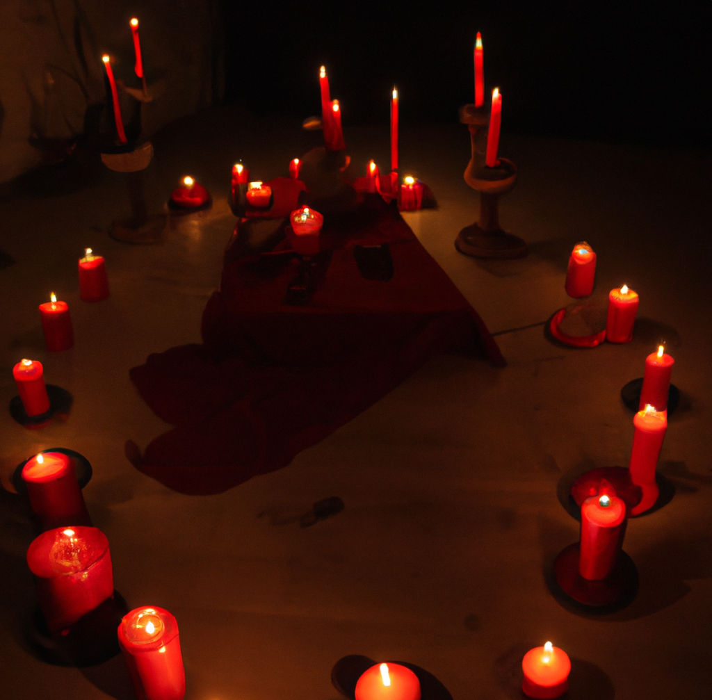

My family had always been involved in the occult, and as their son, they saw me as the perfect recruit. They began indoctrinating me at a very young age, teaching me the ways of their disgusting, satanic cult and encouraging me to participate in their fucked up rituals.
At first, I didn't know what to make of it all. I was just a child, and I couldn't really comprehend the evil of what was happening. To me, it was just a game, a way to pass the time. I didn't realize how wrong it was.
I was never sent to a normal school and had a chance to build relationships with normal children of my age. I was always in the cult, with the cult, for the cult. Even at times when I felt something was wrong, I was too afraid of what would happen if I stood up to them. I saw them do terrible things to people.
So I stayed, and I took part in their rituals and ceremonies. I even began recruiting other people to join. I was deeply involved in the cult, and I didn't know anything other than the cult.
But then, one day, the cult demanded something I simply couldn't do. They wanted me to sacrifice a human being, a young woman, in order to prove my loyalty and the summon the goddess of Suni. They gave me a knife and told me to slit her throa, but I... I just couldn't do it. Like some primitive instinct simply rejected the idea. I was fourteen years old at that time.
That's when I ran away. That's when I finally broke free.
But of course, they wouldn't simply let me go like that. I disrespected the occult, and in revenge, they wanted my blood.
I've been on the run for weeks now, and the cult members are hot on my heels. They're determined to find me, and I know that they're angry. They want to hurt me for leaving their cult, and I'm terrified of what they'll do to me if they catch me.
I've had to be careful, always watching my back and staying out of sight. I can't stay in one place for too long, because I know that the cult members are looking for me. They've been to every town and village in the area, showing my picture and offering a reward for my capture.
I've had to sleep in fields and abandoned houses, always moving from place to place. I'm tired and scared, and I don't know how much longer I can keep running. But I have to keep going, no matter what. I can't let them catch me.
I've heard rumors that the cult members are getting more and more violent in their search for me. They've been attacking people and causing all sorts of chaos in their hunt for me. I'm terrified of what they'll do if they find me, and I'm not sure how much longer I can keep hiding.
But I have to keep trying. I can't let them catch me. I have to find a way to escape and start a new life, far away from the clutches of the cult.